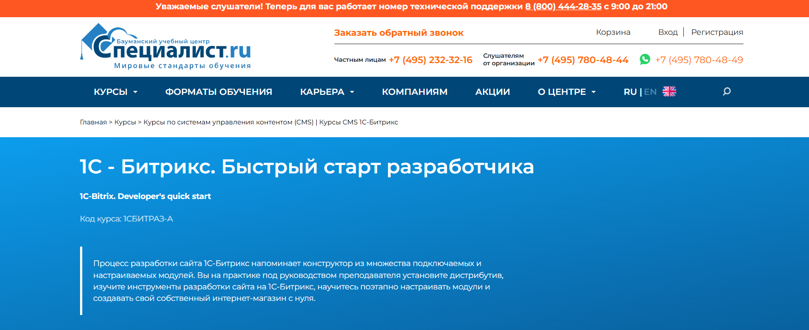

Курс «Bitrix-разработчик с нуля» — Нетология

Ссылка на программу: https://netology.ru/programs/bitrix
Цена: 110 000 рублей без скидок
Длительность курса: 10 месяцев
Удостоверение по завершении: Диплом о профессиональной переподготовке
Поддержка в трудоустройстве: Мы поможем вам с поиском работы
Что вы получите
- Доступ к программе по трудоустройству от Центра карьерного развития
- Помощь в создании качественного резюме
- Навыки уверенного представления своих сильных качеств
- Информация о поиске работы
- Знакомство с платформами для поиска вакансий и доступ к проектной бирже
- Подготовка к собеседованиям
- Умение говорить о себе без волнения и адекватно реагировать на вопросы
- Формирование портфолио
- Оформление портфолио так, чтобы работодатели убедились в ваших навыках
- Умение работать на себя
- Доступ к информации о первых клиентах и организации с ними коммуникации
Кому полезен данный курс
Не имеет значения, есть ли у вас опыт работы или специальное образование. Вы сможете освоить новую профессию с нуля и постепенно научитесь создавать сайты при поддержке профессиональных наставников.
Чему вы научитесь
В ходе курса вы создадите:
• Кроссбраузерную верстку макета блога с применением HTML и CSS
• Игра «Крестики-нолики» на JavaScript
• Информационный ресурс на платформе 1С-Битрикс
• Интернет-магазин спортивного снаряжения на базе 1С-Битрикс
Структура курса
Обучение проходит два раза в неделю с 19:00 до 21:00. Вы решите более 100 практических заданий, выполните три проектных работы и успешно защитите дипломную.
Часть 1. Основы веб-разработки на JavaScript и PHP
Верстка сайтов на HTML и CSS
Вы научитесь создавать сайты на HTML и CSS и сможете вносить изменения в уже существующие макеты. К концу модуля вы сможете самостоятельно создать лендинг.
12 часов теории
24 часа практики
Теги для формирования контента страниц
Структурные теги страниц
Формы и их теги
CSS-селекторы
Определение контраста элементов
Блочная модель
Позиционирование элементов
Форматирование текстов
Оформление декоративных элементов
Статусы интерактивных элементов
Кроссбраузерная верстка блога с использованием HTML и CSS
Курсовая работа
Вы создадите макет личного блога, реализовав кроссбраузерную верстку с помощью HTML и CSS.
24 часа практики
Основы программирования на JavaScript
Познакомитесь с основами кодирования, напишете свои первые строки и создадите простые проекты.
Практика будет проходить на JavaScript, что позволит вам лучше понять работу клиентского приложения.
Вы рассмотрите различные языки программирования и сможете выбрать подходящий для себя, основываясь на личных и карьерных целях.
В конечном проекте вы разработаете онлайн-вариант игры, аналогичной «Монополии».
12 часов теории
24 часа практики
Алгоритмы
Переменные, строки и числа
Логика и математические операции
Условные конструкции
Алгоритмы выбора
Обработка ошибок в коде
Массивы
Циклы
Функции и подпрограммы
Объекты
Синхронное и асинхронное выполнение алгоритмов
Игра «Крестики-нолики» на JavaScript
Курсовая работа
В рамках курсовой работы вам предстоит создать игру «Крестики-нолики». Фронтенд-разработчик подготовит визуальные элементы, ваша задача заключается в программировании игровой логики, где игроки по очереди устанавливают свои знаки.
24 часа практики
Система контроля версий Git
Вы научитесь применять Git и GitHub, сможете загружать свои домашние задания и создать своё первое портфолио — работодатели часто требуют примеры кода на GitHub.
4 часа теории
9 часов практики
Цели системы контроля версий
Основные операции: коммиты, изменение и восстановление, поиск и просмотр истории
Работа с GitHub
Ветвление, слияние и решение конфликтов
Совместная работа
Основы PHP
Начнете изучение языка PHP. В рамках курса познакомитесь с базовыми конструкциями и будете работать с функциями и объектами.
13 часов теории
32 часа практики
Введение в PHP и PhpStorm
Консольные приложения на PHP
Основные операторы и функции
Функции в PHP
Структуры данных в PHP
Реакция на запросы и сессии
Работа с файлами и HTML-формами
Размещение приложений на хостинге
Работа веб-приложений
Вы изучите, как взаимодействуют фронтенд и бэкенд. Рассмотрите популярные форматы и методы передачи данных, а также API современных HTTP-серверов.
7 часов теории
21 час практики
HTTP и современный веб. Форматы и методы передачи данных
Библиотека JQuery
Библиотека Bitrix JS
REST API в Bitrix Framework
Форматы обмена данными JSON и XML
Работа с MySQL
Введение в профессию Bitrix-разработчика
Финальная работа
Промежуточный проект — интернет-магазин спортивного оборудования
Вы создадите интернет-магазин спортивной техники на платформе 1С-Битрикс.
Ваша задача — разработать как клиентскую, так и административную части проекта.
Для финального проекта отводится один месяц.
Административная часть включает:
• Управление продукцией
• Обработка заказов
• Управление новостями
• Создание текстовых страниц
• Настройка платежных систем
• Организация доставки
Клиентская часть включает:
• Текстовые страницы
• Навигационное меню
• Каталог товаров
• Раздел новостей
• Корзина для покупок
• Оформление заказов
Ключевые навыки
- Создание HTML и CSS верстки сайтов
- Работа с фронтенд-частью проекта на JavaScript
- Работа с бэкенд-частью проекта на PHP
- Управление версионностью кода с помощью Git и GitHub
- Разработка сайтов на основе Bitrix Framework
- Администрирование сайтов на платформе 1С-Битрикс
- Работа с API сторонних сервисов
- Работа с новым ядром платформы Bitrix D7
Профессия 1С-разработчик в Skillbox

Сайт: https://skillbox.ru/course/profession-1c/
Стоимость: 3956 рублей в месяц с рассрочкой на 22 месяца
Длительность курса: 6 месяцев
Удостоверение по окончании: свидетельство от компании «1С»
Поддержка в трудоустройстве: да
Станьте разработчиком в системе «1С:Предприятие» с наставником и начинайте зарабатывать, даже если у вас нет опыта в программировании. После завершения обучения мы поможем вам найти подходящее место работы.
Кому подойдет этот курс
Новичкам
Вы овладеете практическими навыками программирования и работы с конфигурациями в «1С:Предприятие 8», подготовитесь к экзамену «1С:Профессионал» и сможете найти вакансию программиста 1С.
Пользователям «1С»
Вы сможете адаптировать конфигурации под нужды клиента. Научитесь составлять ТЗ, формировать отчеты, обрабатывать данные, разрабатывать и изменять функции.
Опытным программистам
Вы получите представление о оперативном учете, научитесь взаимодействовать с учетными регистрами и расчетами. Сможете вносить изменения в типовые конфигурации 1С.
Сертификат от компании «1С»
Данный курс сертифицирован разработчиками «1С:Предприятие».
По окончании обучения вы получите два документа: сертификат Skillbox и свидетельство от компании 1С. Это поможет вам выделиться среди кандидатов и гораздо быстрее найти работу в крупных организациях.
Чему вам предстоит научиться
Автоматизировать бизнес-процессы
Разрабатывать системы учета
Создавать и настраивать функционал
Настраивать отчеты для руководства
Проектировать архитектуру баз данных
Интегрировать 1С с другими программами
Разрабатывать свои собственные конфигурации
Гарантируем трудоустройство или возврат средств
Вы получите индивидуальную поддержку от специалиста по найму. Вместе вы подготовите резюме, соберете портфолио и разработаете карьерный план для быстрого поиска работы. Вам будут доступны интересные вакансии и предпочтение перед другими кандидатами.
Если вы не нашли работу, мы вернем вам деньги за курс*.
Структура курса
Курс состоит из трех блоков, которые предоставят вам конкурентные преимущества и подготовят к сертификации.
29 тематиках модулей
57 видеокурсов
Путь от 1С-разработчика с нуля до профи
Мини-курс «Язык SQL-запросов»
Курс «Общие знания программиста»
Преподаватели
Александр Архипов
Эксперт по внедрению, работает в крупной компании-партнере фирмы «1С»
Денис Слепцов
Руководитель отдела программного обеспечения
Александр Маковеев
Специалист по внедрению
Курс «Создание сайта на битрикс» — Академия IT

Сайт: https://academiait.ru/course/sozdanie-sajta-na-bitriks/
Стоимость: Бесплатно
Длительность курса: 14 занятий
Удостоверение по итогу обучения: не предусмотрено
Поддержка с трудоустройством: отсутствует
Курс предназначен для всех желающих познакомиться с профессией.
Что вы получите от курса
Этот онлайн-курс «Создание сайта на Битрикс» доступен без оплаты.
Завершив его, вы сделаете важный шаг к более глубокому обучению и сможете более четко осознать свои интересы!
Кроме того, вам открыты доступа к множеству других увлекательных курсов, которые также можно пройти бесплатно. Достаточно зарегистрироваться и получать знания без финансовых вложений.
Вы также можете найти и скачать необходимые вам материалы, такие как книги, методические пособия, инструкции и презентации абсолютно бесплатно.
Содержание курса
Урок 1: Основы. Построение веб-сайта на платформе Битрикс
Урок 2: Верстка шаблона с применением HTML/CSS. Создание сайта с Битриксом
Урок 4: Разработка шаблона для Битрикс с использованием HTML/CSS верстки
Урок 3: Установка Битрикс на локальный компьютер (виртуальный сервер Битрикс)
Урок 5: Создание меню в Битрикс
Урок 6: Создание инфоблоков в Битрикс, их отображение на сайте, верстка инфоблока
Урок 7: Разработка модулей для подключения в Битрикс
Урок 8: Создание слайдера в Битрикс с использованием инфоблока и компонента «новости»
Урок 9: Улучшение визуального оформления веб-сайта на Битрикс
Урок 10: Формирование каталога товаров с помощью Битрикс
Урок 11: Перенос сайта Битрикс на хостинг, интеграция формы поиска и регистрации пользователя
Урок 12: Верстка компонента «каталог» в Битрикс
Урок 13: Анонсирование каталога и аспекты SEO для Битрикса
Урок 14: Заключительные рекомендации и некоторые аспекты работы с Яндексом
Курс «1С-Битрикс» — Факт.Школа

Веб-сайт: https://school.fact.digital/
Стоимость: 18 000 рублей
Длительность: 3 месяца
Документ по завершении: информация отсутствует
Помощь в трудоустройстве: выпускники получают подготовку к трудоустройству в ведущей IT-компании России – «Факт».
Кому предназначен этот курс
Студентам, изучающим программирование
Тем, кто самостоятельно увлечен веб-разработкой
Студентам технических специальностей, желающим перейти к программированию
IT-специалистам, стремящимся освоить веб-разработку
Что вы узнаете
Обучение на практике вместо теории
Совместная работа над настоящими проектами
Сдача экзамена – и работа в ваших руках
Рабочее окружение с одними из лучших веб-разработчиков страны
Содержание курса
Изучение HTML и CSS
Основы HTML
Изучение CSS
Разметка текстового контента
Работа с гиперссылками и изображениями
Работа с таблицами данных
Создание стилей для HTML-форм
Изучение PHP
Начальная ступень в изучении PHP
Расширенные возможности PHP
Работа с пользовательскими данными в PHP
PHP и MySQL
Объектно-ориентированное программирование на PHP
Освоение платформы 1С-Битрикс
Введение в CMS, функции 1С-Битрикс
Различные способы установки платформы 1С-Битрикс, особенности установки на виртуальную машину
Структура Bitrix Framework, использование административного интерфейса
Верстка сайта на 1С-Битрикс, организация областей на сайте, понимание структуры типичного сайта
Функции при загрузке страниц
Интеграция верстки в шаблоны 1С-Битрикс, принципы использования общих шаблонов
Сравнение структуры HTML-шаблона и стандартной верстки 1С-Битрикс
Компоненты в 1С-Битрикс, их типы и предназначение
Работа с меню в 1С-Битрикс
Права пользователей в системе, авторизация пользователей
Работа с картами в 1С-Битрикс, примеры и их назначение
Создание обратной связи в 1С-Битрикс, работа с информационными блоками
Управление динамическими данными в 1С-Битрикс
Механизм кэширования в 1С-Битрикс, основы работы с кэшем
Комплексные компоненты в 1С-Битрикс
Технологии, применяемые в комплексных компонентах
Поиск на сайтах, работа в 1С-Битрикс
Дополнительные стандартные возможности настройки функционала платформы, работа с контентом
Анализ типичных ошибок на итоговом экзамене по 1С-Битрикс
Подготовка к окончательному экзамену по 1С-Битрикс
Итог курса: гарантия трудоустройства в компанию «Факт» после успешного завершения курса и сдачи независимого экзамена от 1С-Битрикс
Курс «1С – Битрикс. Быстрый старт разработчика» — Центр компьютерного обучения «Специалист» при МГТУ им.Н.Э.Баумана

Веб-сайт: https://www.specialist.ru/course/1cbitraz
Стоимость:
Для физических лиц:
Очное обучение – 19 990 рублей
Онлайн обучение – 19 950 рублей
Обучение в кредит – от 1 067 рублей в месяц
Индивидуальные занятия – 48 000 рублей *
Для организаций:
Очное обучение – 24 490 рублей
Онлайн обучение – 24 490 рублей
Продолжительность: 24 академических часа + 12 дополнительных бесплатно
Документ об успешном прохождении курса: сертификат
Помощь с трудоустройством: отсутствует
Кому подходит данный курс
Необходимая подготовка для студентов:
Законченный курс HTML и CSS. Уровень 1.
Создание сайтов на HTML 5 и CSS 3 или аналогичная подготовка.
Успешная сдача курса по PHP, часть 1.
Основы PHP8 или эквивалент.
Рекомендуемая подготовка (но не обязательная): окончание курса «1С — Битрикс: Управление сайтом – администрирование» или аналогичная квалификация.
Что вы изучите
Настройки сайтов для проектов на платформе 1С-Битрикс
Работа с инфоблоками и API
Создание собственных модулей
Установка и настройка компонентов
Создание и настройка полноценного интернет-магазина
Содержание курса
Модуль 1. Введение в сайт на Битрикс. Установка системы. Понимание структуры сайта (4 академических часа)
Формирование представления о системе «1С-Битрикс»,
Монтаж и базовая настройка системы,
Создание множества сайтов под одной лицензией,
Структура системы и принципы управления веб-сайтом.
Понимание структуры сайта, организация веб-структуры, методы обмена данными с сервером, управление адресами.
Модуль 2. Инфоблоки. Работа с API платформы «1С-Битрикс» (4 академических часа)
Понимание инфоблока,
Свойства инфоблока и его секций,
Импорт-экспорт данных инфоблока.
Введение в API системы «1С-Битрикс»,
Работа с базовыми функциями API,
События и работа с ними,
Индивидуальные настройки форм редактирования элементов.
Модуль 3. Архитектура продукта. Сайт. Шаблоны (4 академических часа)
Концепция шаблона веб-сайта,
Ключевые элементы шаблона сайта,
Архитектурные особенности продукта,
Структура файлов,
Права доступа.
Модуль 4. Технологии. Автоматизация стандартных процессов разработки (4 академических часа)
Принципы и методы отладки веб-сайтов на «1С-Битрикс»
Что такое мастера, создание и применение мастера
Стандартные задачи веб-разработчика и их автоматизация,
Понятие об агентах, обработка событий, кэширование.
Модуль 5. Модули и компоненты (4 академических часа)
Глубокое понимание структуры файлов,
Взаимосвязь между модулями и компонентами, принципы их организации,
Настройки и модификация стандартных компонентов, разработка собственных.
Модуль 6. Создание интернет-магазина (4 академических часа)
Аудиторные занятия с преподавателем: 24 академических часа + 12 часов бесплатно*
* В рамках курса дополнительно предоставляются часы для самостоятельного выполнения заданий в компьютерных классах. Вы сможете зак закрепить полученные знания, выполнить домашние задания и проконсультироваться с преподавателями. Дополнительные часы организуются в дни занятий по предварительной записи с администратором.
Для утренних групп с 8:30 до 10:00
Для дневных групп – по 1 академическому часу до и после занятий (13:15-14:00, 17:10-17:55)
По итогу обучения проводится итоговая аттестация: тестирование на последнем уроке или оценка по практическим заданиям, выполненным в процессе обучения.
Результаты обучения
Процесс разработки сайта на платформе 1С-Битрикс можно сравнить с конструктором, состоящим из различных модульных решений.
Под чутким руководством преподавателя вы получите практические навыки установки программного обеспечения, изучения инструментов для разработки веб-сайтов на 1С-Битрикс, а также научитесь последовательно настраивать модули и создавать свой собственный интернет-магазин с нуля.
Курс «Битрикс» — irs.academy

Веб-сайт: https://irs.academy/kurs_po_bitriks
Стоимость: 32 000 рублей
Продолжительность: 16 часов. 8 уроков
Документ о завершении: Сертификат специалиста по Битрикс
По окончании будет выдан сертификат, подтверждающий прохождение 8 уроков онлайн-курса по Битрикс.
Сертификат будет отправлен в электронном виде; при необходимости оригинал будет отправлен Почтой России.
Кому подойдет данный курс
Для новичков
Если вы никогда не проходили онлайн-курсы по 1С-Битрикс и хотите научиться работать с этой системой, курс, разработанный преподавателем академии HEDU, именно для вас, поскольку он доступен для начинающих.
Для владельцев бизнеса
Если вы хотите глубже понимать функционал вашего сайта и контролировать работу специалистов или заниматься чем-то самостоятельно, онлайн-курс по Битрикс станет отличной основой.
Для контент-менеджеров
Если вам требуется заполнять контентом веб-порталы, и у вас возникли вопросы по применению платформы Битрикс, рекомендуем пройти пошаговый курс для повышения своей продуктивности.
Для администраторов сайтов
Если ваша задача состоит в обновлении информации на сайтах и вы хотите восполнить пробелы в знаниях, тогда курс по 1С-Битрикс станет для вас весьма полезным.
Для желающих подрабатывать
Тем, кто хочет заработать дополнительно в свободное время, советуем пройти онлайн-обучение по работе с Битриксом с нуля от академии HEDU и получить ценные знания.
Для фрилансеров
Если вы стремитесь освоить навыки, которые позволят вам зарабатывать удаленно, рекомендуем освоить курс по Битриксу с нуля и начать принимать первые заказы.
Что вас ждет на курсе
- Познание основ создания сайта на платформе 1С-Битрикс
- Умение самостоятельно устанавливать и настраивать систему
- Навыки редактирования страниц веб-ресурса
- Доступ к обучающим видео по работе с 1С-Битрикс
- Получение сертификата по завершении курса
- Знания об обеспечении безопасности сайта
Тематика курса
Урок № 1 — Запуск работы с CMS 1С-Битрикс
В первой части мы ознакомимся с установкой системы.
Изучаем административную панель и функции визуального редактора
В этом разделе мы познакомимся с функциями администрирования и начнем работать с визуальным редактором. Поймем, для чего нужны различные команды в панели управления.
Занятие 2 — Визуальный редактор
Во втором уроке мы детально исследуем возможности визуального редактора и его преимущества для пользователей.
Также акцентируем внимание на значении технической поддержки.
Занятие 3 — Формируем структуру
Третий урок будет посвящён работе со страницами. Мы научимся добавлять изображения и видео, а также вставлять гиперссылки. Будет также рассмотрена карта сайта и создание различных меню.
Занятие 4 — Значение информационных блоков
Четвертый урок будет посвящён информации статического и динамического типа. Вы ознакомитесь с различными вариациями инфоблоков и после занятия будете уметь их создавать и управлять ими.
Занятие 5 — Знакомство с компонентами
Пятый урок будет сосредоточен на компонентах. Мы разберем их предназначение и отличия простых компонентов от комплексных, а также затронем тему навигационных компонентов.
Занятие 6 — Настройки и инструменты
На шестом занятии мы начнём уделять внимание настройкам. Вы поймете, как формировать группы и управлять правами доступа для пользователей. Обсудим безопасность сайта и узнаем, как правильно выполнять хранение данных и резервное копирование. После урока вы сможете оптимизировать базу данных самостоятельно.
Занятие 7 — Дополнительные функции 1С-Битрикс
Седьмая встреча будет посвящена дополнительным сервисам, интегрированным в 1С-Битрикс. Вы познакомитесь с CDN и возможностями композитного сайта.
Занятие 8 — Создание лендингов
Восьмое занятие будет посвящено платформе Сайт24: вы научитесь создавать одностраничные сайты. Также обсудим тонкости готовых решений на маркетплейсе.
Результаты курса
- Вы научитесь с нуля создавать, управлять и заполнять контентом сайты, что поможет вам в заработке.
- По окончании курса вы сможете:
- Настраивать модули.
- Управлять системой через интерфейс.
- Наполнять портал фото, видео и текстами.
- Свободно использовать инструменты системы.
- Контролировать доступ пользователей.
- Создавать страницы, новые разделы и специфические веб-формы.
Курс «Битрикс» — Дело Системы

Ссылка на сайт: https://delosystems.ru/courses-bitrix/crm/
Стоимость:
для физических лиц: 16 000 руб.
для студентов: 12 900 руб.
для юридических лиц: 18 000 руб.
Длительность: 16 академических часов.
Сертификат по окончании курса: информации нет
Содействие в поиске работы: информации нет
Кому подходит курс
Если вы ведете бизнес, Bitrix CRM станет полезным инструментом для вас. Увеличивающееся число предпринимателей и владельцев бизнеса из различных сфер это осознает. Курс по CRM — одно из самых востребованных направлений нашего обучения. Во время курса вы научитесь увеличивать клиентскую базу и повышать уровень продаж.
Группа компаний «Дело Системы» принимает вас на обучение. Наши преподаватели — опытные профессионалы, которые помогут вам быстро разобраться с основами работы CRM и приобрести необходимые навыки на курсе crm bitrix24.
Что вы освоите
Курс предназначен для пользователей, не имеющих опыта работы с CMS 1С-Битрикс:
Управление сайтом. В курсе рассматриваются темы, связанные с наполнением и администрированием сайта, без углубления в программирование. Образовательный процесс подходит для всех, кто хочет познакомиться с работой 1С-Битрикс.
Структура курса
- карточка CRM — полный доступ ко всей истории сделки, от первого обращения клиента до оценки работы ваших сотрудников;
- автоматизация продаж — звонки, письма, реклама — всё выполняется в автоматическом режиме;
- CRM-маркетинг — используйте готовые шаблоны или создайте собственные для анализа результатов рассылок;
- звонки из CRM — аренда телефонного номера или подключение собственной телефонии с записью разговоров на платформе;
- письма из CRM — возможность отправлять письма клиентам непосредственно из системы;
- бесплатный онлайн-чат — сообщения поступают в CRM автоматически, распределяясь между менеджерами;
- план продаж и отчётность — распределение целей между сотрудниками, контроль загрузки и анализ продаж;
- документы в CRM — создание актов, счетов и доверенностей на основе шаблонов или использованием готовых;
- CRM для услуг — владельцы и менеджеры, например, beauty-салонов и клиник могут вести расписание мастеров и отслеживать загрузку ресурсов;
- предложение услуг бронирования;
- мобильная CRM – возможность управлять продажами и оставаться на связи из любой точки мира!
- Бесплатное приложение для iPhone и Android.
Результаты обучения
- Использование данной CRM-системы охватывает практически все разделы компании.
- Бухгалтеры, менеджеры по работе с клиентами, маркетологи, руководители и владельцы бизнесов должны знать, как использовать эту систему в своей деятельности. Обучение по битрикс24 crm будет также полезно IT-специалистам, занимающимся внедрением и сопровождением приложения.
- Курс организован правильно и охватывает все аспекты работы с CRM, предоставляя навыки её практического применения. Это улучшит взаимодействие компании с клиентами и повысит уровень сбыта товаров и услуг. Занятия проводятся на основе реальных случаев из бизнеса, что делает обучение актуальным.
- Обратитесь к экспертам группы компаний «Дело Системы» и прокачайте свои навыки работы с одной из самых популярных систем для ведения бизнеса.
Курс «1С-Битрикс»

Сайт: https://dwstroy.ru/disc01/
Стоимость: 3 990 руб.
Длительность: Курс включает 19 уроков общей продолжительностью 4 часа 08 минут.
Документ о прохождении курса: нет информации
Содействие в трудоустройстве: отсутствие информации
Кому будет интересен курс
Для успешного завершения курса необходимы базовые знания PHP, HTML, CSS, JS, а также сертификат от 1С-Битрикс «Администратор Базовый».
Чему вы сможете научиться
- Совершенствовать свой сайт;
- Научитесь работать с документацией 1С-Битрикс;
- Понимать файловую структуру компонентов;
- Работать с многомерными массивами;
- Разрабатывать логику работы компонентов;
- Избегать распространённых ошибок;
- Правильно ставить задачи перед программистами;
- Модифицировать существующий функционал или создавать новые;
- Реализовывать собственные идеи в дизайне сайта.
Краткое содержание курса
Урок 1.
Вводный курс. Понятие компонентов.
На этом уроке мы познакомимся с компонентами, их различными типами и функциями, разберём работу системы 1С-Битрикс.
Урок 2.
Позиционирование и подключение компонентов.
Здесь мы обсудим, где находятся компоненты в 1С-Битрикс, их названия и правила подключения.
Урок 3.
Файловая структура простого компонента.
Подробно изучим файловую структуру компонентов, включая файлы component.php, .parameters.php, .description.php и шаблонов.
Урок 4.
Структура комплексного компонента.
Знакомимся с комплексным компонентом, его структурой и логикой работы, а также выявим отличия от простого компонента.
Урок 5.
Работы с файлом .description.php.
На этом уроке мы более подробно изучим файл .description.php, включая его ключевые слова и языковые файлы.
Урок 6.
Работа с файлом .parameters.php.
Обсуждаем назначение и логику функционирования файла .parameters.php, изучим массив PARAMETERS и его составные части.
Урок 7.
Изучение шаблона компонента.
Начнём работу над шаблонами компонентов, определим их разновидности и расположение в системе.
Урок 8.
Интеграция верстки в шаблон компонента.
На примере урока по CSS, мы научимся внедрять разметку в структуру компонента и взаимодействовать с инфоблоками.
Урок 9.
Работа с выводом данных из инфоблока.
Научимся извлекать информацию из массива $arResult, применяя цикл foreach(), и добавим новые функции в шаблон нашего компонента.
В этом разделе мы будем применять все ранее освоенные знания. Следуя моему уроку по верстке, мы создадим новый компонент под названием «Слайдер». Мы внедрим различные приемы верстки, создадим инфоблок с его элементами и разработаем логику работы компонента.
Урок 10.
Основные правила разработки
Давайте подробнее рассмотрим основные принципы программирования на платформе 1С-Битрикс. На основании верстки из моего урока по CSS мы сформируем четкий план действий и выделим ключевые задачи для создания компонента «Слайдер».
Урок 11.
Перенос верстки в шаблон компонента
Начнем с создания всех необходимых директорий и файлов для нашего компонента, а также опишем его в файле .description.php, чтобы он стал виден в редакторе. Затем мы создадим инфоблок с элементами и перенесем верстку в шаблон компонента.
Урок 12.
Настройки компонента в файле .parameters.php
На данном этапе мы займемся настройкой для компонента «Слайдер». Мы возьмем несколько стандартных параметров из простого компонента, подключим модуль инфоблоков и опишем основные конфигурации для его работы.
Урок 13.
Определяем логику работы компонента
Мы добавим эффективную функцию для манипуляции с массивами. Преобразуем данные из массива $arParams в безопасный формат. Обратимся к документации 1С-Битрикс, чтобы извлечь необходимые элементы из инфоблока для формирования массива $arResult.
Урок 14.
Работаем с шаблоном компонента
В этом разе мы заменим статические данные в шаблоне компонента на динамическую информацию из массива $arResult. Базируясь на параметрах компонента, мы также разработаем условия для отображения различных блоков.
Урок 15.
Интеграция компонента «Слайдер» в шаблон сайта
Мы изучим, как расположены шаблоны сайтов в системе. Посмотрим на файловую структуру шаблона сайта и процесс его перемещения в каталог local. В завершение данного этапа мы интегрируем наш компонент «Слайдер» в общую структуру сайта.
Четвертая глава: МОДЕРНИЗАЦИЯ КОМПОНЕНТА
В этом разделе мы узнаем, как работать с логикой и настройками компонента через шаблон, без изменения основных файлов системы.
Урок 16.
Описание новых параметров компонента
На этом занятии мы подготовим план по доработке существующего компонента и определим его новые параметры, которые необходимы для его работы. Используя массив $arCurrentValues, мы свяжем определенные настройки.
Урок 17.
Новая логика работы компонента
В этом уроке мы раскроем особенности работы файлов result_modifier.php и component_epilog.php. Затем, используя result_modifier.php, мы улучшим логику функционирования компонента через его шаблон и завершим доработку самого шаблона.
Пятая глава: РАБОТА СО СВОЙСТВАМИ И ОШИБКИ
В заключительном этапе мы обсудим ключевые аспекты извлечения свойств из инфоблока. Для закрепления материала рассмотрим несколько практических примеров, а также углубим понимание работы с документацией 1С-Битрикс. В завершение мы обсудим возможные ошибки, с которыми можно столкнуться при работе с композицией.
Урок 18.
Извлечение свойств элементов в массив
Мы добавим новые свойства в инфоблок и его элементы. Затем мы рассмотрим, как извлечь данные этих свойств с помощью PROPERTY_, класса CIBlockProperty:: и метода GetNextElement(). В конечном итоге мы сформируем массив свойств, который поместим в $arResult.
Урок 19.
Распространенные ошибки
Мы проанализируем часто встречающиеся ошибки, такие как «Не удалось обнаружить код вызова компонента». Под конец дам общие рекомендации по работе с компонентом.
Автор
Горелов Денис
Являюсь сертифицированным разработчиком 1С-Битрикс с уровнем «Профессионал», имею более 5 лет практики с данной CMS. Веду YouTube канал, где размещаю свыше 100 видеоуроков по программированию, которые получили положительные отзывы от зрителей.
У меня есть различные сертификаты от 1С-Битрикс:
— Интеграция дизайна и настройки платформы
— Основные технологии и расширение стандартных возможностей системы
— Конфигурирование веб-систем для достижения оптимальной производительности
— Технология композитного сайта
— Разработчик Bitrix Framework
— Установка и настройка
— Администратор. Бизнес
— Администратор. Модули
— Администратор. Базовый
— Контент-менеджер
Результат прохождения курса:
После окончания курса вы сможете быстро разработать собственный компонент.
Курс «Разработчик Bitrix Framework» — ГК «СофтБаланс»

Сайт: https://1c-open.ru/kursy-1c-bitrix/razrabotchik-bitrix-framework.php
Стоимость: 17 900 руб.
Продолжительность: 40 ак.ч. (10 занятий)
Документ о прохождении курса: Сертификат
Помощь в трудоустройстве: информация отсутствует
Кому подойдет курс
для программистов
веб-мастеров
html-верстальщиков
Уровень предшествующей подготовки слушателей:
Необходимы навыки практического программирования на PHP, базовые знания работы с базами данных, а также умение формулировать SQL-запросы. Знания HTML, CSS и JavaScript будут полезны. Навыки работы с удаленными серверами по ftp/sftp также потребуются.
Что вы сможете освоить
- Устанавливать и настраивать систему управления 1С-Битрикс для начала работы;
- Понимать архитектуру системы:
- Файловая структура
- Модули и компоненты
- Шаблоны сайтов и отдельных компонентов
- Расширять функционал системы
- Создавать структуру сайтов
- Разрабатывать шаблоны сайтов и компоненты на базе html-верстки
- Улучшать существующие компоненты и разрабатывать свои собственные
- Обрабатывать события и многое другое
Содержание курса
Занятие 1
Введение. Теоретическая часть.
Установка 1С-Битрикс. Теория и практика
Интерфейс системы управления. Теория и практика
Занятие 2
Архитектура продукта. Теория.
Создание структуры сайта. Практическое задание
Занятие 3
Шаблон сайта. Теория.
Управление включаемыми областями. Теория
Установка шаблона сайта. Практика
Занятие 4
Язык и языковые файлы. Теория и практика
Меню. Теоретический и практический урок
Права доступа. Теория
Занятие 5
Информационные блоки. Теория и практика
Добавление произвольного PHP-кода. Теория и практическое занятие
Занятие 6
Кеширование. Теория и практика
Компоненты. Простые и комплексные. Теоретическая часть
Занятие 7
Параметры компонент. Теория
Файлы result_modifier.php и component_epilog.php. Теоретический урок
Компоненты. Модификация. Практическое занятие и теория
Занятие 8
Создание собственных компонентов. Теория и практика
Занятие 9
Файл init.php. События. Теория и практика
Оптимизация выборки дополнительных данных. Теория
Занятие 10
Работа с базами данных. Теоретическое занятие
Отложенные функции. Теория
Агенты. Теоретическая часть
Результат обучения
Данный курс предоставляет возможность обучиться разработке интернет-проектов на основе платформы 1С-Битрикс. Участники смогут значительно сэкономить время на изучение функциональных возможностей системы для реализации специализированных проектов. Вы освоите навыки, необходимые для самостоятельного создания и модификации сайтов на платформе 1С-Битрикс. Каждый слушатель получит сертификат «1С-Битрикс» о успешном окончании курса и методические материалы.